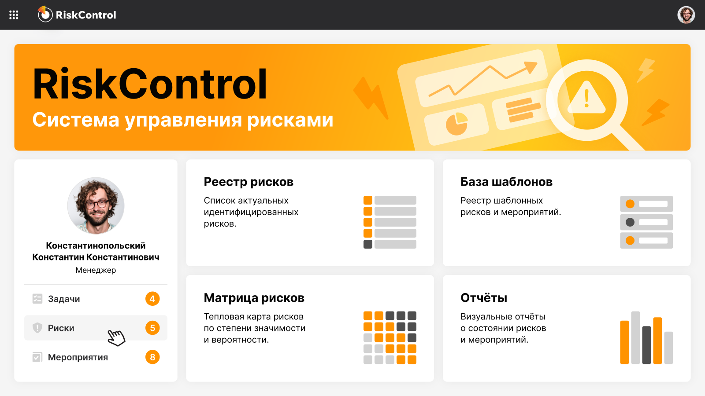
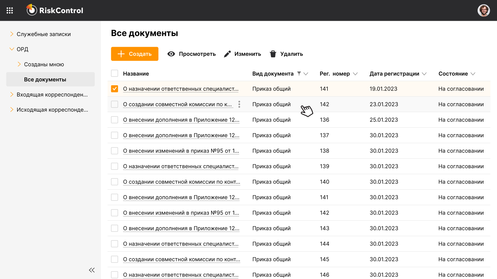

← Все кейсы
Продуктовый дизайн
RiskControl
Управление рисками на iSpace: реестр, матрица рисков, шаблоны и отчёты. Версия для PT Инжиниринг.


Рабочая область
Проектировала интерфейсы управления рисками на платформе iSpace для PT Инжиниринг: реестр и матрицу рисков, работу с шаблонами, документами и отчётами.
Единая навигация
На главной собраны входы в основные инструменты. Рабочая область объединяет документы в списке с поиском, фильтрами и доступными действиями.